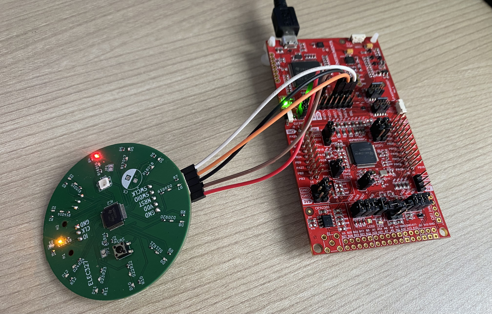

Portfolio
Featured Projects
A selection of hardware and embedded systems projects built from the ground up.
16-Bit Single-Cycle Processor
Custom-built single-cycle 16-bit processor capable of complex arithmetic and logic operations. Engineered the full processor core in Verilog and Assembly, simulated with AMD Vivado waveform analysis, and validated on a Xilinx Spartan-7 FPGA board to confirm real-hardware functionality.

Embedded LED Digital Clock
Developed embedded C firmware for a MSPM0G3507 microcontroller, configuring GPIO and IOMUX registers to drive a 24-LED clock PCB. Implemented a layered state-machine architecture with timing-accurate 1 Hz logic to independently control inner and outer LED rings for minute and hour display, with multiple switchable clock modes and PWM.
